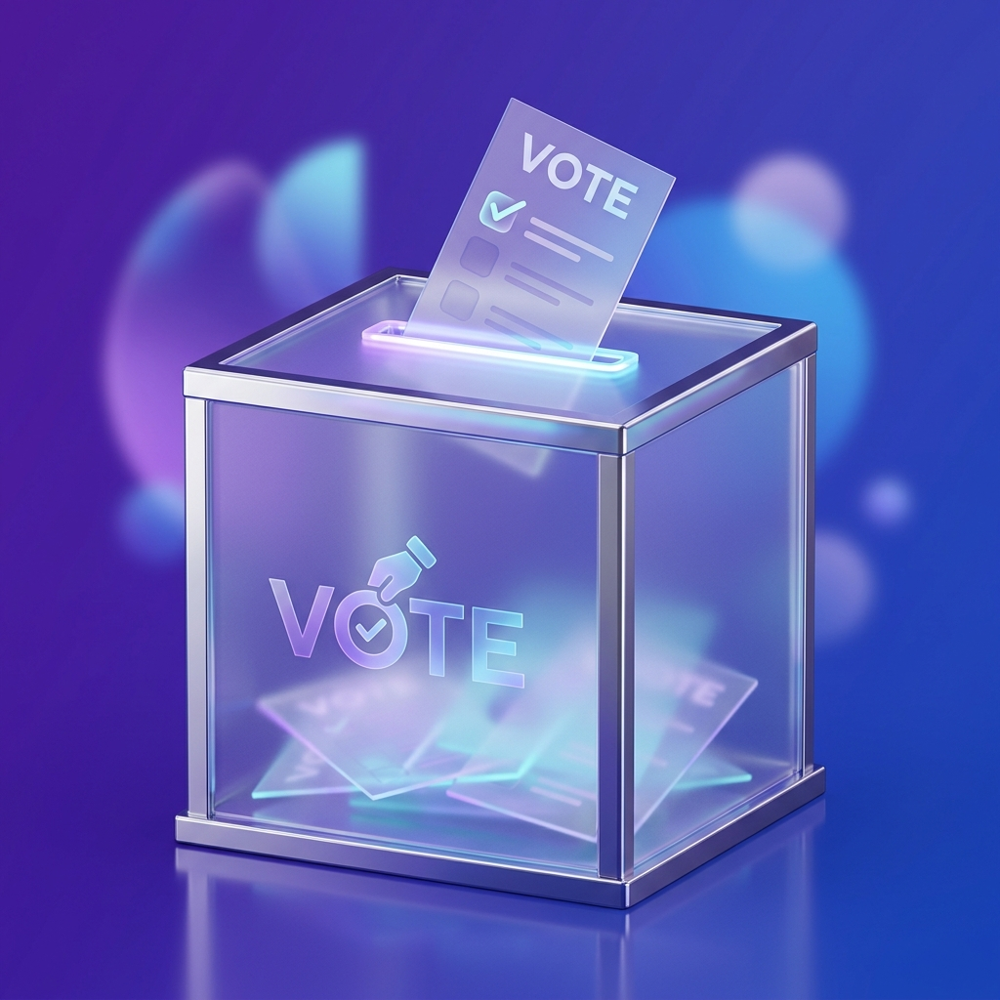
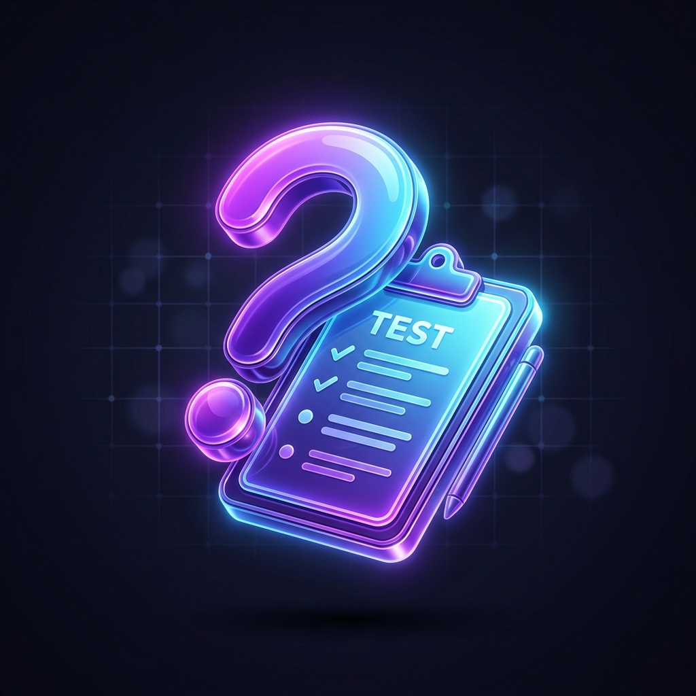

Understanding Elections
The foundation of a democratic society is the right and responsibility to vote.
What is an Election?
An election is a formal group decision-making process by which a population chooses an individual or multiple individuals to hold public office.
It is the core mechanism of representative democracy, ensuring that the government is accountable to the people and reflects the will of the citizens.
Types of Elections
- General Elections: Nationwide or statewide elections for major offices.
- Primary Elections: Preliminary elections to select party candidates.
- Local Elections: Selection of municipal, county, and local officials.
- Special Elections: Held to fill unexpected vacancies.
- Referendums/Initiatives: Direct voting on specific laws or policies.
Key Components
1. Voter Registration
- Must meet age (18+), citizenship, and residency requirements.
- Registration processes vary by state (online, mail, in-person).
- Deadlines are critical and strictly enforced.
2. Campaign Period
- Candidates present their platforms and policies to the public.
- Includes debates, town halls, and media advertisements.
- Intensive voter outreach and fundraising activities.
3. Voting Day
- Citizens cast ballots at designated polling locations or via mail.
- Strict rules ensure ballot privacy and security.
- Options include in-person, early voting, and absentee.
4. Counting & Results
- Rigorous counting and verification procedures by officials.
- Result certification to make outcomes official.
- Established recount procedures for extremely close races.
The Election Journey
A chronological guide to the election process from start to finish.
Exploratory Phase
Potential candidates form exploratory committees, begin initial fundraising, develop campaign infrastructure, and conduct strategic planning.
Official Announcements
Formal candidacy declarations, campaign launch events, filing official paperwork, and initial policy platform releases.
Primary Season
State-by-state primary elections/caucuses, candidate debates, delegate accumulation, and intensive media scrutiny.
General Campaign
Party conventions, final candidate selections, general election debates, intensive touring, and early voting begins in some states.
Final Push
Last voter registration deadlines, peak advertising spending, massive get-out-the-vote operations, and absentee ballot distribution.
Voting Day
Polls open (typically 6 AM - 8 PM), in-person voting occurs, exit polling is conducted, and mail-in ballots reach their final deadline.
Initial Results
Vote counting begins, preliminary results and media projections are announced, followed by victory or concession speeches.
Certification
Official vote counts are completed, provisional ballots verified, potential recounts occur, legal challenges resolved, and results are certified.
How to Vote: Step-by-Step
Your practical guide to successfully participating in democracy.
Check Your Eligibility
Before doing anything else, ensure you are legally allowed to vote.
- Age requirement: Must be 18 years or older by election day.
- Citizenship: Must be a legal citizen.
- Residency: Must meet your state or local residency requirements.
- Restrictions: Check state laws regarding felony convictions or mental competency standards.
Register to Vote
You cannot vote if you are not registered before the deadline.
Online
Many states offer quick online registration portals.
By Mail
Print, fill out, and mail the national voter registration form.
In-Person
Register at the DMV, post offices, or election offices.
Research Candidates & Issues
Make an informed decision before you receive your ballot.
- Read official voter guides and pamphlets.
- Review candidate websites and political platforms.
- Watch debate recordings and local news coverage.
- Use non-partisan fact-checking resources.
Choose Your Voting Method
Decide how you will cast your ballot based on what is available and convenient.
Election Day
Find polling location, bring ID, check hours.
Early Voting
Avoid crowds by voting at designated centers before election day.
Mail-In / Absentee
Request ballot, fill carefully, sign, and return before deadline.
Prepare for Voting Day
A little preparation ensures a smooth experience.
- Review a sample ballot and make selections beforehand.
- Gather required identification (varies by state).
- Plan transportation and know your polling place hours.
- Know your voter rights (e.g., right to assistance, right to provisional ballot).
Cast Your Ballot
The main event! Follow instructions carefully.
- Check in with poll workers and receive your ballot.
- Mark choices clearly filling in bubbles completely.
- Review your ballot before final submission.
- Don't forget to get your "I Voted" sticker!
Track & Verify
Your civic duty doesn't end when the ballot is cast.
- Track your mail-in ballot online (if your state offers this).
- Watch for certified election results.
- Stay informed about the actions of those elected.

Test Your Knowledge
See how much you know about the democratic election process.
Loading question...
Quiz Completed!
Here is your final score:
Voter Preparation Checklist
Keep track of your progress. Your data is saved automatically to your browser.
Your Progress
0 of 0 items completedFrequently Asked Questions
Find answers to common questions about voting and elections.
Registration
You can typically register online through your state's election website, by mail using the National Mail Voter Registration Form, or in-person at local election offices, DMVs, or armed services recruitment centers.
Yes, but you must update your registration to your new address. If you move across state lines, you must register in your new state. Be aware of residency requirements (often 30 days) before an election.
Several states offer "Same-Day Registration" allowing you to register and vote on election day. In other states, missing the deadline means you cannot vote in the current election, but you should register for the next one.
Voting Process
You have options! Most states offer Early Voting periods before election day. Alternatively, you can request an Absentee or Mail-In Ballot to fill out at home and mail back before the deadline.
Voter ID laws vary drastically by state. Some require strict photo ID (like a driver's license or passport), some accept non-photo ID (like utility bills), and some require no ID if your signature matches. Always check your specific state's rules.
Rights & Issues
Do not leave without voting! You have a federal right to cast a Provisional Ballot. This ballot will be kept separate and counted once your eligibility is verified after election day.
If you make a mistake, do NOT attempt to cross it out. Ask a poll worker for a new ballot. The old, incorrect ballot will be voided securely. You are legally allowed to request a replacement.
Voter Resources
Helpful links and directories to get you ready for election day.
Polling Locator
Find your nearest early voting center or election day polling place.
Find Polling PlaceContact Officials
Have questions? Get in touch with your local county election office.
View Directory